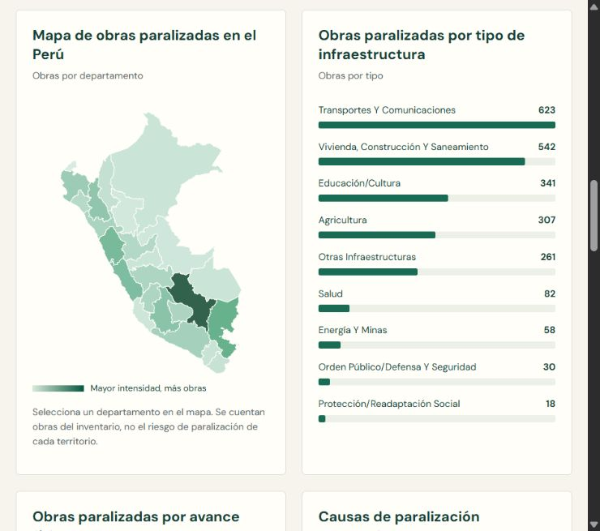

Inversión pública · Perú
Obras que esperan
¿Qué sabemos de las obras públicas paralizadas que ya superaron el 90 % de avance físico?
2.262obras en el inventario de paralizadas
281obras con más del 90 % de avance físico
155de esas 281, con código de inversión y sin asignación registrada para 2026

Ver el resumen en video · 57 s
Video con subtítulos y narración generada con IA a partir de mi voz. Créditos y licencias.
¿Cómo se llega a las 155 obras?
De las 281 obras con más del 90 % de avance, 267 tienen código de inversión. Entre estas, 155 carecen de asignación presupuestaria registrada y 112 sí la tienen. Las 14 sin código se mantienen como un grupo aparte.
El avance físico es el registrado en el inventario. Por sí solo, no indica si la obra presta servicio.